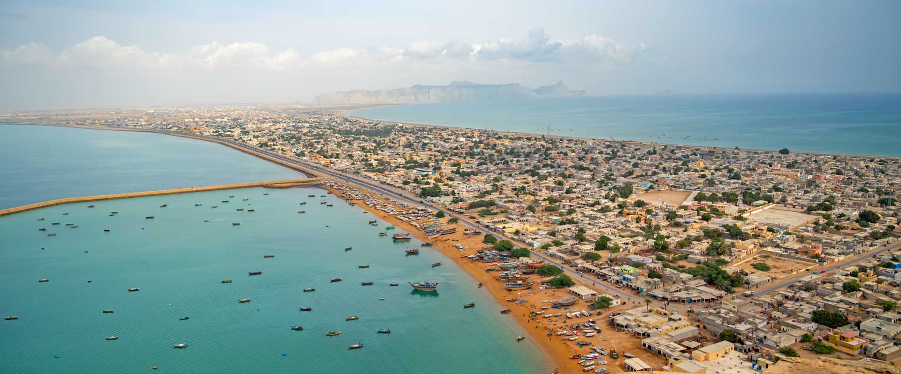

<div class="portfolio-single-load clearfix">
    <div class="custom-full-width-box">
        <div class="custom-container">
            <div class="custom-row align-items-center">
                <div class="custom-image-column">
                    
                </div>
                <div class="custom-text-column">
                    <h2 class="custom-heading">Gwadar</h2>
                    <p class="custom-paragraph">
                        
                        Gwadar, the third-largest sea port in Pakistan, epitomizes Balochistan's hidden treasures. The crown jewel of Gwadar is Astola Island, also known as the "Island of the Seven Hills," boasting unparalleled natural beauty. Indulge in the region's culinary delights, including fresh crabs, prawns, and Surma fish, harvested from the Gwadar seaport. Sample traditional dishes such as Masala Sajji and Coconut Halwa, reflecting the rich gastronomic heritage of Balochistan.
                        

                    </p>
                </div>
            </div>
        </div>
    </div><!-- .custom-full-width-box end -->

</div><!-- end single-project -->
